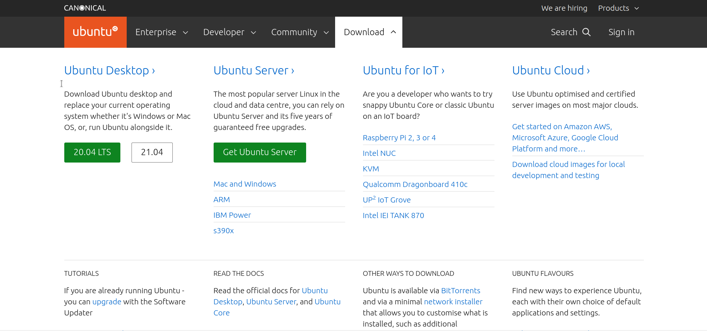
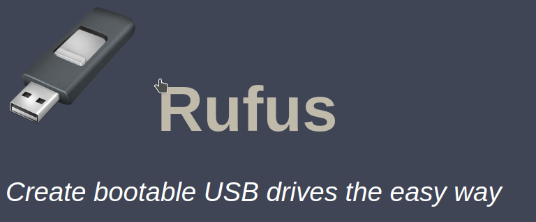
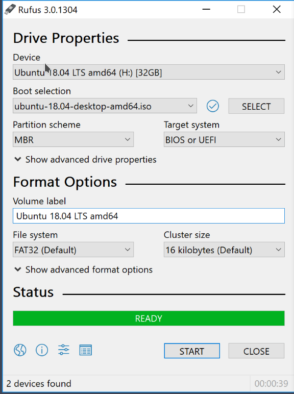

Before you start creating the bootable USB, let’s see the essentials first. Create bootable USB.
Make sure that you have the following:
- A USB key (pen drive) with at least 4 GB of size with no important data on it (the USB key will be formatted)
- Internet connection to download Ubuntu ISO (this could be done on any computer)
- It would be a good idea to know if your system uses MBR or GPT (Rufus will create live USB accordingly)
Let’s see the steps TO Create Bootable USB.
Step 1: Download Ubuntu ISO
ISO is basically an image file. You download this single file of around 2.4 GB and it consists of an “image” of Ubuntu Linux. You then use a tool to extract the content of the ISO file in a such a manner that you can boot the Ubuntu operating system from the USB itself. Go to the Ubuntu website and choose the version of your choice ubuntu website You may choose Ubuntu LTS if you do not want to upgrade your system every six to nine months.
Step 2: Make a live Ubuntu USB with Rufus
Rufus is an excellent free and open source tool for making bootable Linux USB disks. On Windows, I prefer and recommend using Rufus.
Download Rufus
Go to the website of Rufus and download the .exe file: rufus
Creating the live Ubuntu USB
Plug in your USB key (pen drive) to the computer. Now double click on the download Rufus exe file which should be in the Downloads folder.
When you run Rufus with the USB plugged in, it automatically recognizes it. If there are more than one USB keys plugged in, please ensure to select the correct USB under Device.
may also automatically find the Ubuntu ISO. If not, you can always browse to the ISO by clicking on the SELECT button.
I hope you have checked the partitioning scheme and BIOS type as I mentioned in the prerequisite section. Based on that, select the Partition Scheme and Target System in Rufus.
Everything looks good? Hit the START button.
You may be asked to choose how to write the image. Choose ‘Write in ISO Image mode’:
It will take a few minutes to complete the process. You’ll see a green signal when the live USB is ready.
How to boot from live Ubuntu USB
Once the live USB is created, you can proceed with testing Ubuntu in live mode. The bootable USB can be used on any system, not only on the one where you created it.
Plug in the live USB on the desired computer. What you need to do is restart or power on your computer.
At the screen that shows the logo of your system manufacturer, press the F2 or F10 or F12 key. You may try pressing all of them one by one if you are not sure of the key. But be quick when you do that otherwise it will boot into the operating system.
This key is different for different brand of computers. Some may even use Esc or Del keys for this purpose.
In the BIOS settings, normally, you should see a screen like this. Here, you use the arrow keys to move down to USB option and press enter to boot from the USB